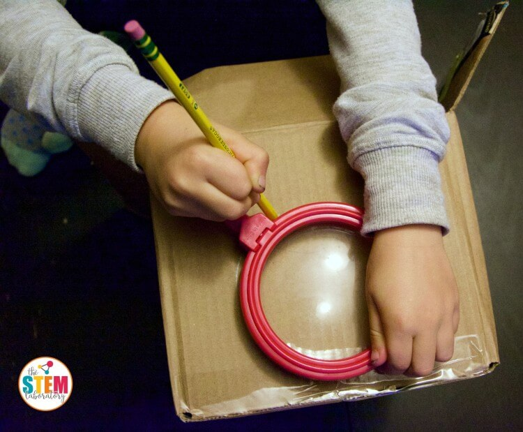
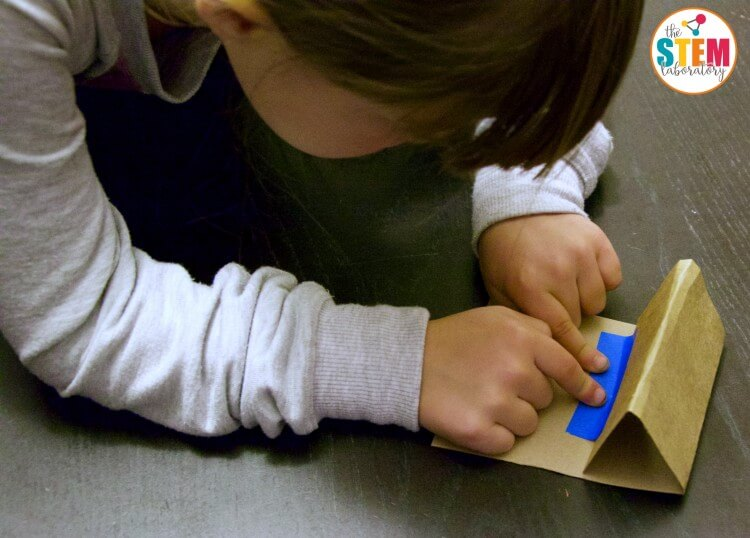

DIY Smart Phone Projector
Things that you need
- small cardboard box
- maginify glass or camera lens
- scissors and knife
- tape
- smartphone
Making the Projector
- First, place the maginifying glass on the front of the box and trace it.

- Second, use the scissors and the knife to cut the a hole lightly smaller than the traced circle
- With a spare piece of cardboard, fold the cardboard to make it a stand for the smartphone. Secure it with tape.

- Slide the phone into the box, under a cardboard flap.

- Next, tape the maginifying glass inside the box aligned with hole in the box
- Finally, add the smartphone on the stand

Home Page
Virtual Reality Googles